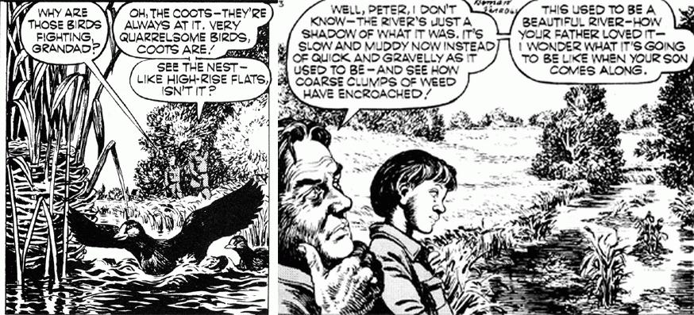
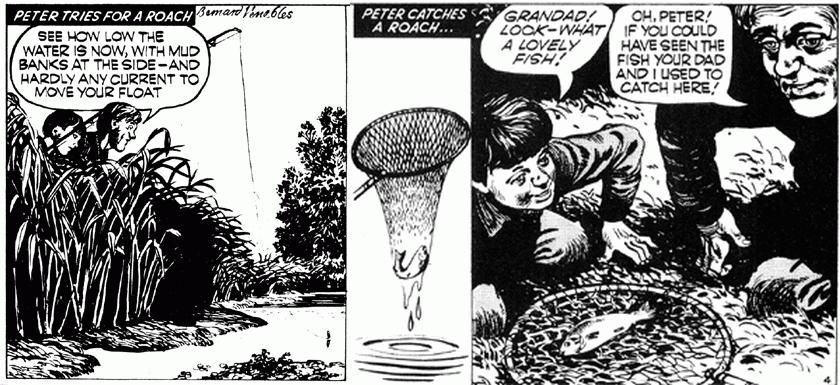

Man made rot is eating at the heart of nature. We are depoiling the heritage of our sons, our grandsons, and their grandsons.
And now-direct from England-the world's most conscientious ecology cartoon feature. A little overstated for our American tastes, perhaps, but full of real meat, nonetheless. Ah, if we only had a cartoon series like this on our side of the pond! But, since we don't MOTHER presents Mr. Crabtree Crusades!
Modern farming methods make a pan in the soil-a rock-hard layer under the top soil. So, when heavy rain comes it does not sink gently in as used to be so. It pours off, makes torrents, sending the river into flood and making the coot build its nest high for the safety of the--eggs. The rain passes and the depleted river sinks sluggishly, leaving the nest like a tower. Impoverished soil carried off the fields by the flood, adds to the mud, slows the current further and encourages rank growth where the clean current used to flow. So, Mr. Crabtree tells Peter, the river deteriorates progressively-the more mud settles, the more rank weed grows to trap more mud, and so on. Thus the river sickens.
Sad change, man-made, has come to the river, but Peter is a boy as his father and his grandfather were boys, and if fish are in water he must fish. His catch, triumph to him but depressing to Mr. Crabtree, is far more significant than he knows. There is no more finely accurate barometer of the health of the environment than the rivers that run in it and the creatures that live in them. Everything in the land, good or bad, ends in the river and thence to the sea. So when river life becomes thin and poor, and, particularly, fish are weak and runted, look sharply at the land. Most rivers in Britain are less good than they were, some in creeping decline, some ruined.
|
 |
 |
|